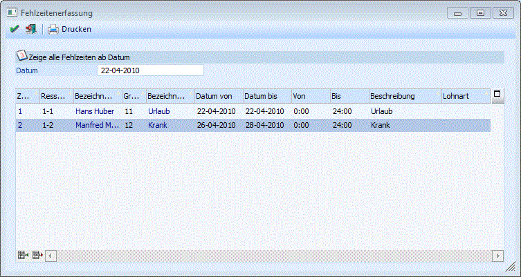

Hier können für die einzelnen Ressourcen die Fehlzeiten erfasst werden. Fehlzeiten können im Fenster "EXIM" mit Vorlagentyp "016 Fehlzeiten Produktion" auch ex- bzw. importiert werden.
Die Kalenderschema-ID wird beim Importieren automatisch vom System vergeben, d.h. neu zu importierende Fehlzeiten sollten keine Schema-ID in der Importdatei besitzen.

Folgende Eingabefelder können bearbeitet werden:
Ø Zeige alle Fehlzeiten ab Datum:
Damit kann eingeschränkt werden, welche bereits erfassten Fehlzeiten angezeigt werden sollen.
Ø Ressource
Hier wird die Ressource ausgewählt (Matchcode F9), für die eine Fehlzeit erfasst werden soll.
Ø Grund
Auswahl des Grundes für die Fehlzeit. Es sind gängige Gründe wie Krankenstand und Urlaub für Mitarbeiter und Service und Wartung für Maschinen vordefiniert. Weitere Ursachen können frei definiert werden (siehe Kapitel PROD Parameter im Handbuch Start)
Ø Datum von / bis
Datum der Fehlzeit
Ø Von / Bis
Zeitraum der Fehlzeit
Ø Beschreibung
Eingabe eines freien Infotextes
Ø Lohnart
Eingabe der Lohnart, die für diesen Zeitraum verwendet werden soll (Achtung: wird zurzeit noch nicht unterstützt)
Ø Entfernen - Taste
Mit der Entfernen - Taste wird die aktuelle Zeile gelöscht. (Hinweis: Die Zeile wird zunächst andersfarbig dargestellt und erst nach dem Speichern selbst wird diese Zeile gelöscht. Fehlzeiten die gerade erst eingegeben wurden, werden sofort nach dem Drücken des Entfernen - Buttons aus der Tabelle gelöscht).
Ø OK - Button
Die eingegebenen Fehlzeiten werden gespeichert.